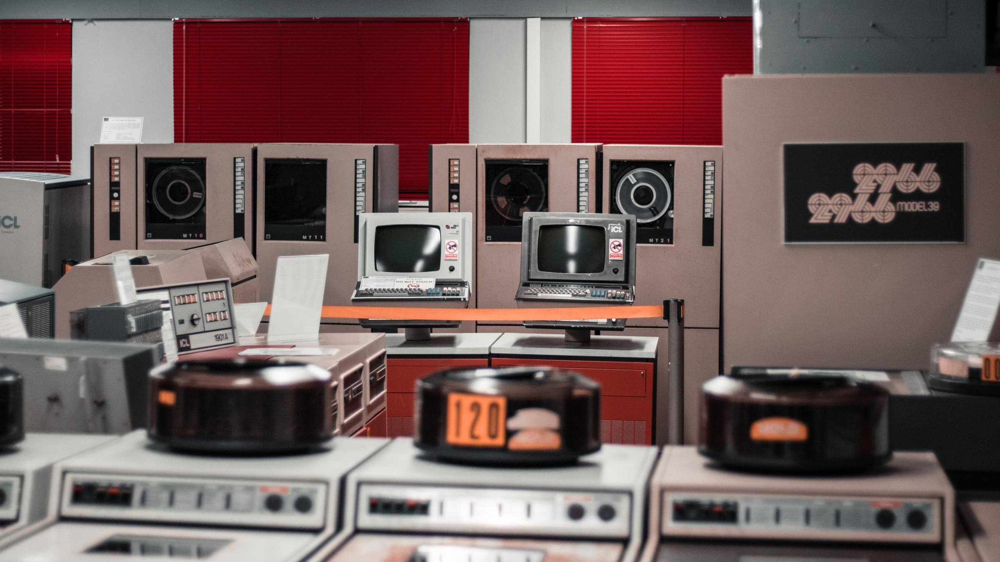
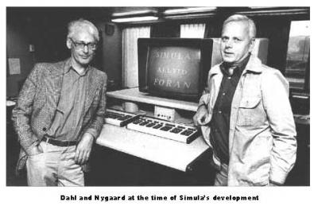

Origen de la programación
La historia de la programación comenzó en el siglo XIX cuando Ada Lovelace escribió el primer algoritmo pensado para ser ejecutado por una máquina. Por esta razón se le considera la primera programadora de la historia.
Durante el siglo XX aparecieron los primeros lenguajes de programación como FORTRAN y COBOL. Estos permitieron a los científicos y desarrolladores crear programas capaces de resolver problemas matemáticos y científicos complejos.
Con el paso del tiempo surgieron nuevos lenguajes y tecnologías que
facilitaron el desarrollo de software. Hoy en día existen miles de
lenguajes de programación y herramientas que permiten crear soluciones
tecnológicas innovadoras.

